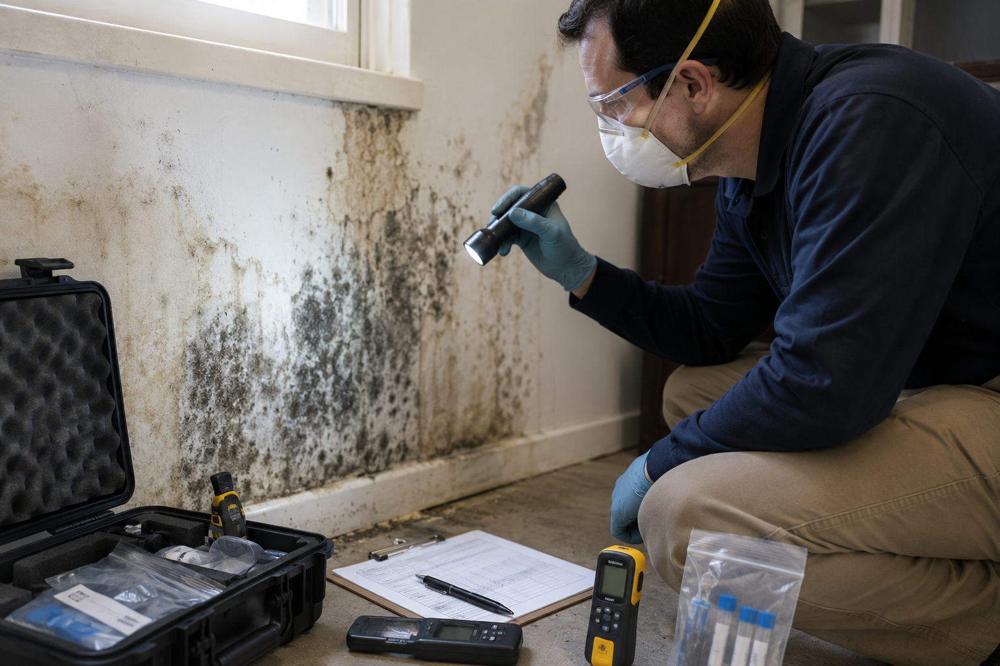
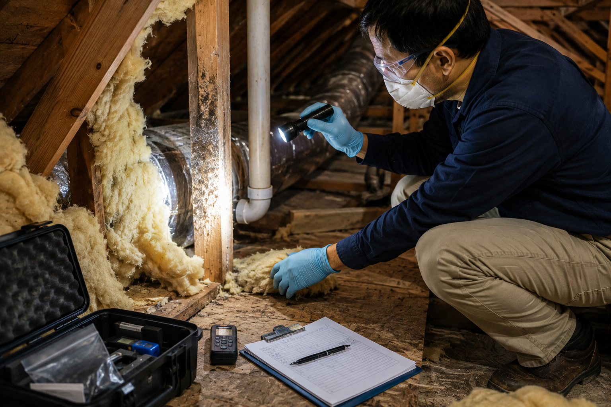

Professional Mold Inspection & Moisture Investigation Services
California Building Environment provides independent mold inspections, moisture investigations, indoor air quality evaluations, and professional sample collection throughout Southern California.
When sampling is appropriate, air and surface samples are collected and submitted to accredited laboratories for analysis. We do not perform laboratory testing ourselves, and we do not perform mold remediation, ensuring our findings remain objective.
Independent Mold Assessments for Residential and Commercial Properties
Our inspections begin with a detailed visual evaluation of the property. We look for visible microbial growth, signs of past or current water intrusion, staining, elevated moisture conditions, and other indicators that may warrant further investigation.
When appropriate, moisture readings, air samples, surface samples, and other environmental samples may be collected. These samples are submitted to accredited laboratories for analysis, and the laboratory findings are incorporated into a detailed inspection report.
Because we do not perform mold remediation, our inspection findings are independent and focused solely on documenting existing conditions.

Common Situations That May Warrant a Mold Inspection
A mold inspection may be appropriate when there are concerns about moisture, visible mold growth, water damage, musty odors, or indoor air quality. Every property is different, and the scope of the inspection is based on the observed conditions and project objectives.
Water Damage
Following plumbing leaks, roof leaks, flooding, or other water intrusion events, an inspection can help evaluate areas that may have been affected by excess moisture.
Visible Mold Growth
Visible discoloration or suspected microbial growth on building materials may warrant further evaluation and, when appropriate, laboratory analysis.
Musty Odors
Persistent musty odors may indicate hidden moisture issues that should be investigated through a professional inspection.
Real Estate Transactions
Homebuyers, sellers, investors, and commercial property owners may request mold inspections as part of their due diligence process.
Indoor Air Quality Concerns
When occupants have concerns regarding indoor environmental conditions, an inspection can help identify potential moisture-related issues.
Post-Remediation Verification
Following mold remediation performed by another contractor, an independent inspection and clearance sampling may be requested when appropriate.
Professional Mold Inspection Process
Visual Inspection
A comprehensive visual inspection is performed to identify visible mold growth, moisture damage, staining, and other conditions that may require further evaluation.
Moisture Assessment
Moisture meters and other inspection methods may be used to identify elevated moisture levels and potential sources of water intrusion.
Sample Collection
When appropriate, air samples, surface samples, or bulk samples are collected using industry-accepted procedures and submitted to accredited laboratories.
Laboratory Report
Laboratory findings are incorporated into a comprehensive inspection report documenting observations, sample locations, and analytical results.

What We Evaluate During a Mold Inspection
Every inspection is tailored to the property and project objectives. Areas commonly evaluated include:
- Visible mold growth
- Water intrusion
- Roof leaks
- Plumbing leaks
- Moisture intrusion around windows and doors
- Wall cavities (when accessible)
- Ceilings and insulation
- Crawl spaces
- Attics
- HVAC systems
- Indoor air quality conditions
- Relative humidity
- Building materials affected by moisture
- Areas identified by the client during the inspection
Mold Inspection FAQs
Do you perform laboratory mold testing?
No. We perform the inspection and collect air, surface, or bulk samples when appropriate. Those samples are submitted to accredited laboratories for analysis. Laboratory analysis is performed by the accredited laboratory—not by California Building Environment.
Do you perform mold remediation?
No. We are an independent environmental inspection and consulting company. We do not provide mold remediation or restoration services, allowing us to provide objective inspection findings.
Will every inspection require sampling?
Not necessarily. The need for sampling depends on the conditions observed during the inspection and the goals of the project. In some cases, a visual inspection and moisture assessment may provide sufficient information, while other situations may warrant laboratory analysis.
How long does a mold inspection take?
Inspection times vary depending on the size of the property, accessibility, and the scope of the investigation. Residential inspections are often completed within a few hours, while larger commercial or industrial properties may require additional time.
When will laboratory results be available?
Turnaround times depend on the accredited laboratory and the selected analysis schedule. Laboratory findings are included with the final inspection report once analysis has been completed.
Regulatory Framework
Mold inspections in California are guided by the following standards and guidelines:
- EPA Mold Guidelines — The EPA provides guidance on mold assessment and remediation for residential and commercial properties.
- Cal/OSHA — California Occupational Safety and Health Administration requires employers to address mold hazards in the workplace.
- CDPH Mold Guidance — California Department of Public Health provides guidance on mold exposure and health effects.
Our mold inspections follow industry standards from the Board for Global EHS Credentialing and the American Council for Accredited Certification.
Do I Need a Mold Inspection?
Check any situation that applies to your property:
If you checked one or more, schedule an inspection.
Schedule Mold InspectionRequest a Quote
What Happens During a Mold Inspection
Visual Assessment
Our inspector examines all areas for visible mold, moisture damage, and conditions that support mold growth.
Moisture Investigation
We identify moisture sources using professional moisture meters and thermal imaging to find hidden water intrusion.
Sample Collection
Air samples and surface samples are collected from suspect areas and submitted to accredited laboratories.
Detailed Report
You receive a comprehensive report with lab results, findings, and recommendations for addressing any issues found.
Schedule an Independent Mold Inspection
Whether you're dealing with water damage, visible mold, indoor air quality concerns, or simply want peace of mind, California Building Environment provides independent inspections and professional sample collection throughout Southern California.